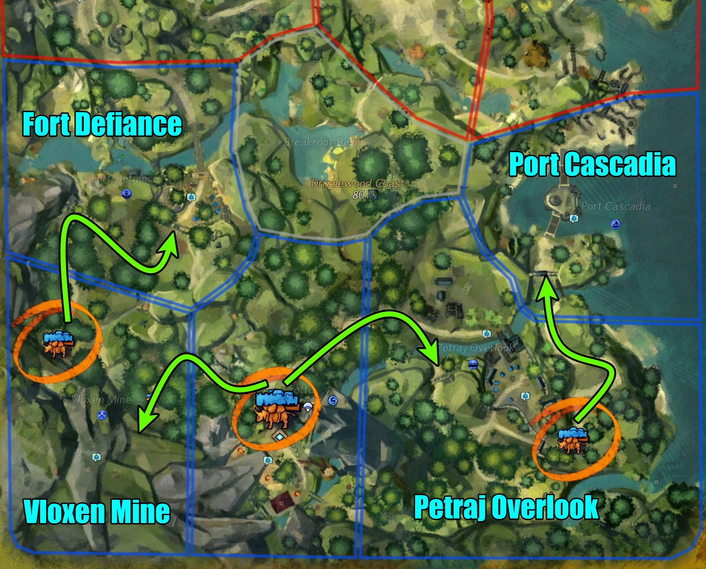

Traveling:
While there is only one waypoint, there are 7 more potential "waypoints" in the map. Each of the camps have icons on the map that's blue or red. If the icon is blue, then you can click on the icon to parachute to that camp. The second option will always be to the main camp. If the icon is red, then you can't parachute unless the camp is in the process of being captured. As you get parachuted from the sky, using a Griffon mount mid-air will make traveling in this map easy and fast! Note: You cannot travel while in combat or in mid-air.
War Supply:
This is the currency of the map. War Supply is gathered in large amounts throughout the map from nodes, chests, and events. Unlike Volatile Magic, this is not a currency where you can easily exchange for loot boxes for gold. In this case, War Supply is used for buying Cache Keys and siege.
Cache Keys:
This can be bought from the Quartermaster vendors at each camp. Outside of the main camp, other camps need to be captured before the NPC will show up. Cache Keys are used to open Charr Supply Drops and caches during the champ train. 40 are required for the champ train, but it's recommended to have at least 40 because there may be a couple Supply Drops throughout the meta.
Charr Field Homing Beacons:
Similar to Silverwaste Shovels, these act as a way to find Supply Drops. This are only obtained by the map bonus reward occasionally. When using the item, using the 1 skill will indicate locations of hidden Supply Drops nearby. Red being somewhat far away, yellow being somewhat near, and green being very near. If a player is on top of the location of the Supply Drop, the 1 skill will change to where they can uncover it for all players. Note: If you use the Homing Beacon, regardless of finding a chest, it will consume it.
Waystations:
Waystations have a blue icon on the map. They are placed in every captured camp and at the main camp. It is required to have the "United Legions Waystation Synchronization" mastery line complete to utilize the full benefit. When interacting with a Waystation, you are given 4 options (minus last option outside of Drizzlewood). The 4th option is just to teleport to camps. Here are the other three:
- Electromagical Pulse (EMP) (10 War Supplies)
This replaces your special skill. EMPs are a large AoE that stuns foes, slows, and deals a great deal of breakbar damage. This is great for champions and bosses. Each time you purchase it, you get 3 charges. This skill can be upgraded via masteries to deal more CC damage and have 5 charges.
- Remote Charge (10 War Supplies)
This replaces your special skill. Remote Charges are small AoEs that deal a moderate amount of damage to foes and burns them. In Drizzlewood, this skill goes high structual damage. Use this while capturing a camp. Each time you purchase it, you get 5 charges. This skill can be upgraded via masteries to deal more damage (to structures too) and have 8 charges.
- Medizooka (10 War Supplies, )
This replaces your special skill. Medizooka allows the user to jump up and parachute and obtain 3 new skills. These skills offer boons for both the player using the Medizooka and the targets. Each time you purchase it, you get 5 charges. This skill can be upgraded via masteries to give more healing and boons and have 8 charges.
Skill 1 offers heals and Regeneration.
Skill 2 offers Protection, Retaliation, Swiftness, and Resistance to allies while doing Vulnerability, Confusion, Weakness, and Chill to enemies.
Skill 3 offers 6 stacks of Might, Fury, Vigor, and Quickness to allies while doing 3 stacks of Bleeding, Blindness, Slow, and 3 stacks of Burning to enemies.
- Purchase of a Portable Waystation
This gives you Waystations as an item in your inventory. These can be placed throughout anywhere in the open world. This essentially is a portable waystation to use EMPs and Remote Charges anywhere.
In general:
Siege is very important to progress the map. At the moment, both the flame ram and the catapult are necessary. In addition to using Remote Charges from the Waystations, flame rams deal great damage to camp gates while the catapults deal great damage to structures. It is best for everyone to supply on Portable Waystations, ram blueprints, and catapult blueprints.
What to do with siege:
An example is having about at least a flame at a gate. Everyone should be placing their Remote Charges at the gate as well. Once in the camp, there are walls, enemy siege, and barriers. To decrease the morale of the camp quickly, a focus on structures over mobs should be the way to go. Structures take a larger % of the morale than individual mobs. Catapults should be placed with some distance between the siege and the structure. With that, catapults should also be placed where it can hit multiple targets (if possible). Walls and tents are good targets as they are generally close to each other.
Note to commanders: This is a great opportunity to run ahead to place rams and catapults and to encourage players to utilize. It can be assumed most players won't bother setting siege up.
Commanding:
There are several different methods I've done that all produce very similar results. Because of this, it can be concluded that the main goal of the map is to progress the camps as fast as possible to reach the final meta and champ train. Methods that work are:
- 1 tag, switching back and forth to camps
- 1 tag, one main squad and another subsquad that does the opposite side
- 2 tags, one for each side
To go more in-depth, here are some examples:
One strategy by Riku Shinobu.4518 [SM] is to have 1 tag, switching back and forth to camps. Though, the main priority is to get the Lighthouse (right side) as fast as possible. This is because the Lighthouse containers are mainly T1-T6 totems, which are generally one of the most expensive crafting materials. The goal is to get the exotic containers form the Lighthouse as soon as possible.
In general, commanders should focus on progressing the map as soon as possible. This invovles calling out important events, being in areas that are in the process of capturing a camp, dropping seige, promoting how to use EMPs and Remote Charges appropiately, and fast-paced.
Outside of the tag:
For being a participant in the map, the best thing players can do is making sure events are being done and completed. This includes escorting caravans and camp events (more detail below). You can follow tag if you'd like, but it's best to familiarize yourself with how everything works because there's no doubt the commander tag will be moving very quick. It's possible to obtain just as much loot as the main squad by roaming by yourself or with a small group of your own and progressing events consistantly.
For all players, it's best to call out events when they are up. This espically for camps that are focusing on progressing to the next camp. It will help the commander with the status of progression, and to let people know there's an event.
The participation system from HoT metas are brought here as well. This can be found on to the top of your mini-map. There are two bars. The top bar is the next "Troop Evaluation" which earns all players in the map Drizzlewood Containers for every camp captured. The rarity of the containers can either be rare or exotic, depending on the participation. The second bar is your participation at that moment. Depending on which event you participate in, will depend on the amount of additional participation you'll recieve.
Supply Bulls - 10%
Events - 20%
Capturing camps - 40%
At 30% participation, you will be able to recieve the rare Drizzlewood Containers for every camp captured. At 150%, you will recieve the exotic varient. To compare the two, the exotic varient gives about:
- 60% more materials
- 25 Charr commendations (instead of 15)
Easy ways to get participation:
Capturing camps are by far the easiest method in getting your participation. While caravans spawn frequently after capturing camps, the meta is too fast pace for players to get 150% quickly since they only offer 10%. It's best to do a combination of all events, but to prioritize camp captures.
After capturing a camp, events spawn every 1 minute and 30 seconds. Most of these camp events are fairly quick and are able to tag easily. Though, if only tag, make sure the event completes as it will stall the map from progressing if it fails.
Beyond the first two camps, as the map progresses and there are more camps captured, it becomes extremely easy to spot an event as there start becoming more caravan events and more camp events. Always pay attention to the map for the caravan symbol if one is nearby and check camps for their events.
Morale
The picture above (made by the amazing Lama.2735) shows all the events that occur at each camp. If an event succeeds, then the morale of the camp gets boosted. If an event fails, then the morale of the camp goes down. Though, during an event, the morale could slowly dimish due to the event destroying structures/troops of the camp so it's best to complete them as fast as possible (especially if the camp is working towards the next camp).
Once a camp has reached full morale, then an escort will begin that will progress to the next camp. This escort is quick with only two waves of enemies and does not upscale to champions. When the escort reaches the gates of the next camp, a new event will occur where players will need to bring down enemy morale. The best methods to bringing down enemy morale is to destroy structures and elite Dominions (with a skull above their head). Use Remote Charges and Catapults to destroy the structures quickly. Once the enemy morale is gone, a champion will spawn. Then, there will be a rally point to capture and the camp will be taken. Repeat until Lighthouse and Leadfoot are captured.

Important note: After capturing the 2nd tier camps (Fort Defiance, Port Cascadia), Supply Caravans from the tier 1 camps (Vloxen Mine, Petraj Overlook) to the 2nd tier camps are extremely important to further the morale. These escorts are often missed because they don't continuously spawn as fast as the Supply Caravans from the main waypoint. They spawn 30 seconds after a successful escort from the main waypoint to the tier 1 camp. Pay attention and call out in chat so a player or two could focus on the escorts.
Camp events:
Artillery (Cannons): Petraj Overlook, Vloxen Mine, Lighthouse Point, Leadfoot Village
There are three cannons that need to be defeated. The cannons themselves don't do that much damage, but there are mobs that spawn around it frequently. With a large amount of people, it can upscale to champions, but the cannons get defeated somewhat quickly.
Propaganda Ballons: Petraj Overlook, Fort Defiance
In the camp, there's a weapon rack that players can grab guns. Once grabbed, the game turns into Action Cam and uses the middle of the screen as the point of where you aim the gun. You need to move the camera towards the ballons in the sky to hit. The best strategy is to aim ahead of the ballon since there is projectile time due to distance. Only two hits are needed to destroy a ballon, regardless of upscale.
Dominion Choppers: Fort Defiance, Port Cascadia, Leadfoot Village, Lighthouse Point
Just like Propaganda Ballons, there's an area in the camp that supplys Charrzooka that can use to destroy the incoming choppers. Though, this time you can target a chopper and the missles will follow. It is best to target the choppers more towards the ground rather than on top of a building. For some reason, the closer you are to the choppers (in elevation), the more the missles "misses". The event does upscale in terms of the HP of the choppers. The amount of choppers remain the same. Be careful if you are underneth the chopper as it will drop bombs on the ground and do heavy damage.
Flame Effigy: Fort Defiance, Breakroot Basin
This event is essentially just a veteran Flame Effigy. This event has two locations, but only one can spawn at a time. Once one is completed, the other location will spawn. The event occurs regardless of the progress of the map.
Artillery (Escort): Fort Defiance, Port Cascadia
This event is a somewhat long escort mission to repair camp cannons. There are two cannons, but are placed on opposite ends of a camp. There's a wave of enemies before the NPC repairs the cannons and during the repair. This event can upscale to multiple champions.
Communication Tower (Recon): Vloxen Mine, Leadfood Village
There are two parts to this event. The first part is to kill mobs to gather encrypted messages to turn in. The second part is to destroy a communication tower that high above the cliffs. This counts as two events. Note that when its time to destroy the tower, it can be damaged by regular skills. It does not upscale if there are a lot of people around so it will die quickly. This is a great event to do if it spawns at the Vloxen Mine because it will increase the morale twice.
Flame Shield (Mortar): Petraj Overlook, Port Cascadia
There are 5 mortars that need to be defeated. They will display an X (cross swords) on the map to display their locations. They die fairly quickly, but are surrounded by a lot of mobs. A really big fire shield will occur at the same time, but the shield is from ally forces instead of something evil.
Mines: Vloxen Mine, Lighthouse Point
There's a spot where players can grab a new special skill that changes their skills to detect mines. Once detected, interacting with the mine will display three colors. Just like Simon Says, follow the order of the color on the skill bar to defuse the mines. Champion mobs can spawn from this event if there are enough people.
Pre-event
Once the Troop Evaluation bar is complete and all camps are successfully captured and defended, then there will be an escort that spawns in both Leadfoot and Lighthouse camps. This escort is the same as if we were escorting to capture a camp, but this will be towards Wolf's Crossing.
Final boss
Both Vishen and the tank from capturing Leadfoot and Lighthouse appear again. Both will spawn at the same time, with Vishen spawning on the west side (on the ground) while the tank appears in the middle. Initially having the two groups from splitting in the pre-events is good enough to split for the beginning of this fight. After dropping her health to 90%, Vishen will disappear and move to the cliffs around the area (west, south, or east). There are portals that will take players directly up to each cliff. As with the assult in Leadfoot, Vishen's real form is with a CC bar.
Vishen phases at every 25% of their health and may teleport to a different location. The tank phases every 33%. The tank will become invulnerable if it reaches the health % interval before Vishen and will guide itself towards the real Vishen to drop projectiles. Vishen phases regardless of the % of the tank. Though, it is wise to defeat both bosses around the same time because, if not, they will respawn.
After defeating both, a chopper will be targetable that will be dropping more AoEs on the ground. Just like the chopper camp events, players need to grab a Charrzooka and target the chopper to defeat it. Initially, the chopper will fly across the three cliffs that Vishen could teleport to, but it will fly back to the center. At some point, it will drop an AoE directly at the center and pull players inward, then force them to fly and drop them to the ground. If you don't glide, you will die from fall damage.
Post-Meta:
Just like the end of Dragonfall's meta, there are champions are various locations and will spawn more loot caches for those shinies. As mentioned earlier, this is where having the Griffon mount comes in handy! The champion's order of spawning is random so it's best to always look for the boss symbol on the map and a short ping. By parachuting to the nearest camp, you can use the Griffon mount mid-air to get to each champion quickly.
While Griffon isn't necessarily required, it's highly recommended because there's 10 champions and only 15 minutes before the map resets. Remember, you need 40 cache keys at this point. To obtain more via War Supplies, make sure to visit a Quartermaster in each camp or the main camp.
Camp Events:
As with the south portion of the map, there are 4 more camps (+ 4 other areas that act like camps) that need to be captured. Though, how to capture each camp functions differentlly. After the timer of the champ train runs out, the area, Dominion's Breach, across Wolf's Crossing will have a Tribune champion to start off. Afterwards, there are 4 camps: Sentinel Bay (west), Canopy Crag (middle), Archstone Coast (east), and Frostvein Watch (north). Each camp has a set of events that could occur in a random order with a total of 4 events. The last event will always be a Tribune champion. The set of events goes as the following:
Sentinel Bay (west)
- Destroy the Aberrant portals - Destroy 3 portals with Aberrant foes
- Destroy the Fallen portals - Destroy 3 portals with Fallen foes
- Destroy the Svanir portals - Destroy 3 portals with Svanir foes
- Destroy the Dominion heavy artillery - Use EMPs to break the tank's defenses then destroy it
- Find and defuse Dominion Mines - Grab a kit to defuse mines
Canopy Crag (middle)
- Destroy the Aberrant portals - Destroy 3 portals with Aberrant foes
- Destroy the Fallen portals - Destroy 3 portals with Fallen foes
- Destroy the Svanir portals - Destroy 3 portals with Svanir foes
- Destroy the corrupted shard - Destroy a fallen shard
- Destroy the Dominion heavy artillery - Destroy 3 cannons
Archstone Coast (east)
- Destroy the Aberrant portals - Destroy 3 portals with Aberrant foes
- Destroy the Fallen portals - Destroy 3 portals with Fallen foes
- Destroy the Svanir portals - Destroy 3 portals with Svanir foes
- Destroy the Dominion heavy artillery - Use EMPs to break the tank's defenses then destroy it
- Rescue POW's by killing Dominion Gatekeepers - Destroy veteran mobs with cross-swords
- Use explosives to destroy the Dominion camp - Grab bomb kit and place them at the tents to explode
Frostvein Watch (north)
- Rescue POW's by killing Dominion Gatekeepers - Destroy veteran mobs with cross-swords
- Use explosives to destroy the Dominion camp - Grab bomb kit and place them at the tents to explode
- Destroy the corrupted shard - Destroy a fallen shard
- Intercept the enemy caravan departing from northern charr camp - Yak slappin'
Methods
There are a couple strategies that a squad can do. The most common and easiest would be to go from
Bridge → Middle → West → Parachute to Middle then East → North Camp. This method works great for everyone because everyone will recieve credit for all the events and able to loot the caches for each Tribune defeated. The con is that it can be the slowest, but this can be done quicker if everyone splits for portal events, EMP and CC when needed, and moves quickly with the tag to another camp.
Another strategy is to split the squad into multiple groups. I've done it with 4 groups split to all the camps. The benefit is that all events scale down so it's very doable with a small group and it is the fastest. The con is that it's rough to organize as a commander to split the squad (espically if the squad is mostly PUGs) and it's never going to be an even split in terms of number and skill. People will also have a harder time gathering the caches. This also means less events for everyone involved (less keys, less war supply, etc).
Part 1:
After capturing all the camps, there is a brief waiting period. All the NPCs will huddle to the west. This is the time to repair your armor, clean your inventory, etc. It's recommended to grab the "Raise Morale" boost from the Quartermaster to provide yourself with 10% bonus to all stats and magic find.
Once the NPCs are moving, there will be a portal from that break area to the center of the map. From here, the squad will need to split into 3 groups. It does not have to be super organized, but there needs to be 3 areas to be captured so that the NPCs can start building a cannon to destroy the Frost Citadel's gate.
When a toolbox spawns, make sure to grab the hammer option to help build the cannon. From there, all that's left is to defend the cannon until a large elemental spawns north of the middle rally point.
Part 2:
At this point, you're at the gates of the Frost Legion! The gate's health is already around 20%, but won't be interactable until the NPCs have reached there. In the meantime, it's best to setup Remote Charges and a catapult to destroy the remaining health. After the gate, there is a Charr wall. These dudes won't let you through unless you CC them a bunch. Use all your CCs and EMPs as much as possible until their breakbar breaks. From here, there are Frost Legions that you need to destroy and another Charr wall at the end of the room.
Part 3:
Behold..the Ruinbringer. Somehow the Frost Legion found a way to give their tanks steroids so you have to destroy this massive tank that takes up your whole screen. The Ruinbringer drops AoEs all around it so be careful as it produces a lot of damage and burn. There are two sides that need to be damaged in order to remove the Ruinbringer's shield down. The tank will be starting from the right and move towards the left in a circular, figure 8 pattern. The best methods to destroy the shield is to:
- Set up Ballistas on both sides (espically in the area where you enter the room)
- Set up a few catapults (predict where to aim)
- Have a few people ride the Charr cars
After both sides have been taken down, everyone is able to do regular DPS on the tank.
Part 4:
In this room, there are 4 Blood Capacitors that need to destroyed. There's a 5th, but that's taken care of by the NPC. Once destroyed, there is Jormag's blood dripping all around it. You can use a nearby extractor to remove it, but it's not necessary. An ice daddy will spawn (the same from the strike missions and Bjora Marches). Simply DPS him and watch for his slams.
Part 5:
So you've destroyed everything in the Frost Citadel, but now the Claw of Jormag has arrived. Once outside, there are three cannons that need to be built. The supply drops from the middle occasionally via chopper. Once the cannons have been built, there are three champions that spawn at each cannon.
After killing the champions, there's another ledge where players will have to drop down to. The Claw acts like Tequatl where players will have to trim its nails. In between the feet and the body, there is a spot where players can hit the boss multiple times. Use CC and cleave to bring the boss down to 5%. The main mechanic of the Claw is that he stomps, creates waves (avoidable by jumping), pushes everyone, and then casts a large AoE that can only be avoided by bolders or being at the very side. After 5%, the Claw moves to the center and constantly slams it. It's best to stay on the right side to DPS and finish it off.
Reward Tracks:
Unlike other maps, this map offers multiple reward tracks through achievements. There's Blood, Iron, Ash, and Flame Legion reward tracks. Each track offer similar items such as Special Mission Documents, crafting materials, Mystic Clovers, and unique recipies and skins. Each track vary in some materials, but the layout of each is the same. To find the most profitable reward track, check out this page. Here's the list of different loots from each track:
- Glory to the Ash Legion: Venoms (T1-T6), Leathers (T1-T6), Glacial materials (T1-T6)
- Glory to the Blood Legion: Bloods (T1-T6), Logs (T1-T6), Charged materials (T1-T6)
- Glory to the Flame Legion: Dusts (T1-T6), Cloths (T1-T6), Molten materials (T1-T6)
- Glory to the Iron Legion: Claws (T1-T6), Ores (T1-T6), Onyx materials (T1-T6)
- Death to the Dominion: Trophies (T1-T6), Logs + Ores (T1-T6), Crystal materials (T1-T6)
- Death to the Corrupted: Trophies (T1-T6), Cloths + Leathers (T1-T6), Corrupted materials (T1-T6)
Meta Progression Bar
Not so much a reward track, but there is a progress bar towards the meta. On the right side, there's "Troop Evaluations" that determine the progress of the map. When the bar reaches full and all camps are successfully captured/defended, then the final bosses starts. Not only that, as the bar timer below the progress bar finishes and the bar progresses, additional containers of loot will also drop. The container's loot depends on which camps have been captured and how much individual participation a player has. All containers have a chance of dropping mission documents, exotic skins (same from the final reward track chest), seige, salvage, Charr Commendations, and Cache Keys.
- Vloxen Mine containers: Ash, Blood Commendations, Ore (T1-T6)
- Petraj Overlook containers: Flame, Iron Commendations, Logs (T1-T6)
- Fort Defiance containers: Ash, Blood Commendations, Fangs (T1-T6)
- Port Cascadia containers: Flame, Iron Commendations, Scales (T1-T6)
- Leadfoot Village containers: Ash, Blood Commendations, Bones (T1-T6)
- Lighthouse Point containers: Flame, Iron Commendations, Totems (T1-T6)
Remember, 150% participation is required to obtain the exotic varient of these containers. 30% is the minimum to aquire the rare varient with a little less loots.
Caches:
Remember, 40 keys are needed to open all the caches available after killing all champions during the champ train. Having an additional 20 keys (at least) are needed for the north meta (though the number of chests aren't exactly 20). Each cache offers:
- Cloths (T3-T4)
- Ingots (T3-T4)
- Leathers (T3-T4)
- Logs (T3-T4)
- Jewels (T5-T6)
- Shards of Crystallized Blood of Jormag (only for Frost caches)